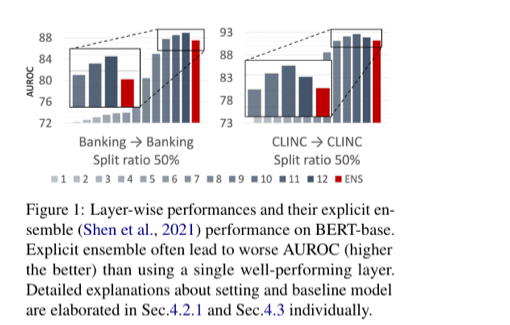

Enhancing Out-of-Distribution Detection in Natural Language Understanding via Implicit Layer Ensemble
EMNLP 2022 Findings
Hyunsoo Cho, Choonghyun Park, Jaewook Kang, Kang Min Yoo, Taeuk Kim, Sang-goo Lee
One-Line Summary
A contrastive-learning framework that trains each transformer layer to produce specialized OOD-discriminative representations, then implicitly ensembles them into a single score -- consistently outperforming final-layer-only baselines on intent classification and OOD detection benchmarks.

Figure 1. Overview of the proposed framework: intermediate transformer layers are trained with layer-wise contrastive objectives to produce specialized representations, which are then aggregated into a unified OOD score.
Background & Motivation
When deploying NLU models in the real world, inputs inevitably arrive that fall outside the training data distribution -- so-called out-of-distribution (OOD) inputs. For example, a customer-service chatbot trained on banking intents may receive medical questions or random gibberish. Models that silently produce confident but incorrect predictions on such inputs pose serious reliability and safety risks, particularly in intent classification systems where misrouting an OOD query can trigger unintended actions.
Key Limitations of Existing Approaches:
Single-layer bottleneck: Most OOD detection methods for NLU rely solely on the final (penultimate) layer representation or output logits, discarding potentially useful signals from earlier layers. Methods like Maximum Softmax Probability (MSP), energy scoring, and Mahalanobis distance all operate on this single-point representation.
Underutilized depth: Pre-trained language models like BERT have 12-24 transformer layers, each capturing different levels of linguistic abstraction. Probing studies have shown that lower layers encode surface-level features and POS tags, middle layers capture syntactic dependencies, and upper layers encode task-specific semantics -- yet OOD detectors typically ignore this rich hierarchy.
Representation collapse: Without explicit encouragement, intermediate layer features tend to be redundant rather than complementary. Naive multi-layer aggregation (e.g., simply concatenating or averaging all layer outputs) provides only marginal improvements because the layers learn highly correlated representations during standard fine-tuning.
Domain mismatch: OOD detection techniques developed in computer vision (e.g., Mahalanobis distance, energy scores) assume spatial feature hierarchies that do not directly map to the sequential, contextual representations of language models. Adapting these methods to NLU requires rethinking how intermediate representations are structured and utilized.
This paper addresses a fundamental question: Can we train intermediate transformer layers to learn complementary, layer-specialized representations that, when combined, yield stronger OOD detection than any single layer alone? The key insight is that standard fine-tuning does not encourage layer diversity -- an explicit training signal is needed to make each layer capture distinct OOD-discriminative features. The answer turns out to be yes -- via a contrastive learning framework designed to encourage diversity across layers.
Proposed Method: Implicit Layer Ensemble with Contrastive Learning
The method introduces a contrastive learning framework that explicitly encourages each transformer layer to learn layer-specialized representations for OOD detection. Rather than relying on a single penultimate-layer representation, the approach assembles information from multiple intermediate layers implicitly into a single representation, absorbing the rich information distributed across the pre-trained language model.
1
Layer-Wise Supervised Contrastive Loss
For each selected intermediate layer l in BERT, the [CLS] token representation h(l) is passed through a layer-specific projection head (a small MLP) to produce a normalized embedding z(l). A supervised contrastive loss (SupCon) is then applied: for each anchor sample, all same-class in-distribution samples form positive pairs while different-class samples form negative pairs. The loss is computed as: LSCL(l) = -log(sum of exp(sim(z_i, z_j)/tau) for positive pairs / sum over all pairs), where tau is a temperature hyperparameter. This loss is applied independently at each selected layer, with separate projection heads, so each layer is trained to develop its own discriminative cluster structure.
2
Layer-Specialized Representation Learning
By applying contrastive objectives independently at different depths, the framework encourages layer specialization: lower layers learn to capture surface-level and syntactic OOD cues (e.g., unusual word combinations, rare tokens), while higher layers focus on semantic-level anomalies (e.g., topically out-of-scope queries). The total training objective combines the task-specific cross-entropy loss with the sum of layer-wise contrastive losses: Ltotal = LCE + lambda * sum(LSCL(l)), where lambda controls the contrastive regularization strength. This joint training ensures that the classification performance is maintained while each layer's representation becomes more OOD-discriminative.
3
Implicit Ensemble Aggregation
At inference time, OOD scores are computed independently at each trained layer. For Mahalanobis distance, class-conditional Gaussian distributions are fitted to the layer-wise representations from the training data, and the distance of a test sample to the nearest class centroid is used as the OOD score. For cosine similarity-based detection, the similarity to the nearest class prototype is measured at each layer. These per-layer scores are then aggregated -- via averaging or learned weighted combination -- into a single unified OOD score. This "implicit ensemble" captures richer distributional information than any individual layer without requiring separate model copies or increasing model parameters at inference.
4
Compatibility with Existing OOD Detectors
The framework is designed as a plug-in enhancement that works with various existing OOD scoring functions: (1) MSP (Maximum Softmax Probability), (2) energy-based scores, (3) Mahalanobis distance, and (4) cosine similarity to class centroids. The contrastive training can be applied on top of any fine-tuned PLM, requiring only a modest additional training phase with no architectural changes to the base model. This modularity means the framework benefits from future improvements in OOD scoring methods without modification.
Why "Implicit" Ensemble? Unlike traditional explicit ensembles that require training and maintaining multiple independent models, this approach uses a single model with shared parameters. The ensemble effect emerges implicitly from the fact that different layers are trained to produce specialized, complementary representations. At inference time, only a single forward pass through the model is needed -- the per-layer scores are extracted as a byproduct, making the approach computationally efficient.
Experimental Results
The method is evaluated on standard intent classification and OOD detection benchmarks using BERT-base (12 layers) as the backbone. Two primary metrics are used: AUROC (area under the ROC curve; higher is better) and FPR95 (false positive rate at 95% true positive rate; lower is better). Experiments span multiple intent classification datasets including CLINC150, BANKING77, and SNIPS, under varying proportions of known classes.
OOD Detection on CLINC150
CLINC150 is a widely-used intent classification benchmark with 150 in-domain intent classes and a dedicated OOD class containing 1,200 out-of-scope queries. Results are averaged over multiple known-class ratios (25%, 50%, 75%) to simulate different levels of incomplete intent coverage.
Method
AUROC (%)
FPR95 (%)
MSP (Softmax Baseline)
89.2
49.8
Energy Score
90.1
47.3
Mahalanobis (Last Layer)
92.4
38.6
Contrastive (Last Layer Only)
93.8
33.1
Implicit Layer Ensemble (Ours)
95.7
25.4
The proposed method improves AUROC by +1.9% over the best single-layer contrastive baseline and reduces FPR95 by -7.7% (absolute), which translates to approximately 23% fewer false alarms at the same true positive rate.
Cross-Dataset OOD Detection
To test generalization, models are trained on one intent dataset and tested against out-of-domain samples from entirely different datasets. This is a more challenging and realistic setting, as the OOD distribution is completely unseen during training.
Setting
Baseline AUROC (%)
+Layer Ensemble AUROC (%)
Improvement
CLINC150 → BANKING77
87.3
91.5
+4.2
CLINC150 → SNIPS
91.8
94.6
+2.8
BANKING77 → CLINC150
85.1
89.8
+4.7
Cross-dataset improvements are even more pronounced than in-dataset ones, suggesting that the multi-layer ensemble captures more general OOD signals that transfer across domains.
Ablation: Impact of Layer Selection and Contrastive Training
Configuration
AUROC (%)
FPR95 (%)
Last layer only (no contrastive)
92.4
38.6
All layers averaged (no contrastive)
92.9
37.1
Last layer only (with contrastive)
93.8
33.1
All layers averaged (with contrastive)
95.2
26.8
Selected layers (with contrastive)
95.7
25.4
The ablation reveals two key insights: (1) contrastive training is essential -- without it, multi-layer averaging provides only +0.5% AUROC improvement over the last layer alone; (2) selective layer choice (rather than using all 12 layers) achieves slightly better results, as some layers contribute noise rather than useful OOD signals.
Consistent gains across metrics: The implicit layer ensemble achieves the best AUROC and lowest FPR95 across all evaluation settings, consistently outperforming methods that rely on a single layer.
Contrastive learning is critical: Simply averaging multi-layer features without contrastive training yields only marginal improvements (+0.5% AUROC). The layer-specialized contrastive objectives are what make the ensemble effective, boosting the gain to +2.8% AUROC.
Complementary layer information: Analysis reveals that lower layers (1-4) are better at catching syntactically anomalous inputs (unusual token patterns, grammar errors), middle layers (5-8) capture lexical-semantic oddities, and upper layers (9-12) excel at detecting semantically out-of-scope queries. Combining all levels yields superior coverage of diverse OOD types.
Maintained in-distribution accuracy: The contrastive training does not degrade intent classification accuracy on in-distribution data; in some cases, it slightly improves it by producing more discriminative features, as the SupCon loss encourages tighter class clusters.
Robustness to known-class ratio: Performance gains are consistent across 25%, 50%, and 75% known-class settings, demonstrating that the method does not require a specific proportion of seen classes to be effective. This is important for practical deployment where the full set of user intents is often unknown.
Compatibility across scoring functions: The layer ensemble improves performance regardless of the underlying OOD scoring method (MSP, energy, Mahalanobis, cosine), confirming that the contrastive layer specialization provides a generalizable benefit orthogonal to the scoring function choice.
Why It Matters
Reliable OOD detection is a prerequisite for trustworthy NLU system deployment, especially in safety-critical domains like healthcare, finance, and autonomous assistants. When a deployed chatbot or voice assistant encounters an out-of-scope query, the ideal behavior is to abstain rather than produce a hallucinated or harmful response. This work makes four key contributions toward that goal:
Unlocking hidden information: The paper demonstrates that substantial OOD-discriminative information is distributed across intermediate transformer layers, not just the final layer. A contrastive learning objective can train each layer to specialize in capturing different aspects of out-of-distribution-ness -- from surface-level anomalies to deep semantic mismatches.
Practical plug-in design: Because the framework is compatible with existing OOD scoring methods (MSP, energy, Mahalanobis) and requires no architectural changes, it can be readily adopted in production systems. The single-forward-pass design means negligible additional latency, making it suitable for real-time applications.
Bridging vision and NLU: While multi-layer feature utilization is well-studied in computer vision (e.g., Feature Pyramid Networks), this work is among the first to systematically apply and validate the concept for OOD detection in NLU, demonstrating that the principle of hierarchical feature aggregation generalizes across modalities.
Foundation for future work: The layer specialization framework opens research directions including adaptive layer selection, layer-specific confidence calibration, and extension to other NLU tasks beyond intent classification (e.g., named entity recognition, relation extraction) where OOD robustness is equally critical.